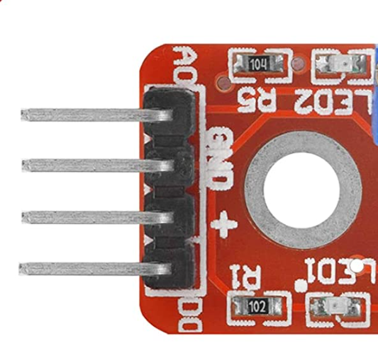
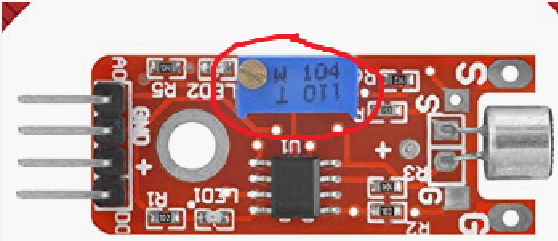

Step by step guide¶
The first thing I had to do was to make sure I had the relevant hardware. I knew that the code itself would not be hard to write, but what might be harder was the fact that I had to initialise it on some hardware that would be next to the doorbell itself. This might prove difficult as I only had experience in writing and testing software but I had never experimented with hardware before.
I therefore turned to the solution of using a Raspberry Pi, a super small computer that is so simple to use that it is used by children as their first foray into computers and programming.
Along with a Raspberry Pi, I also needed some sort of sound detector that would be able to detect a doorbell ring but not be too sensitive and detect footsteps, or people talking.
I therefore bought the following items for the project:
Raspberry Pi (https://www.amazon.co.uk/gp/product/B01CD5VC92/ref=ppx_yo_dt_b_asin_title_o02_s01?ie=UTF8&psc=1)
SD Memory Card - to make sure the Pi would have plenty of memory for Python and other modules needed to work (https://www.amazon.co.uk/gp/product/B073JWXGNT/ref=ppx_yo_dt_b_asin_title_o02_s00?ie=UTF8&psc=1).
Sound Detection Microphone (https://www.amazon.co.uk/gp/product/B07ZHGDYF7/ref=ppx_yo_dt_b_asin_title_o03_s00?ie=UTF8&psc=1).
Jumper Cables - to connect the microphone to the Pi (https://www.amazon.co.uk/gp/product/B074P726ZR/ref=ppx_yo_dt_b_asin_title_o03_s01?ie=UTF8&psc=1).
Process Guide¶
Step 1 - Sort out the hardware¶
The first step would be to make sure that the sound detector is properly connected to the Pi.
To achieve this, we needed three female to female jumper cables (brown, black and white). The sound sensor has four prongs but we only need three of them to correctly connect them to the Pi:

The prongs we need on the sensor are the power (+), the ground (GND) and the digital out signal (D0):
When we then connect the sensor to the Pi, we should see both red lights come on (the two LEDs). To make sure that our sensor has the correct sensitivity, we need to adjust it so the second led flashes when there is a loud sound but not to every sound. We need a flat screwdriver to adjust the blue bit on the top until we achieved our desired sensitivity (turn counterclockwise until the red light disappears then experimented accordingly):
We then need to power up our Pi and make sure that the sound sensor is working accordingly: